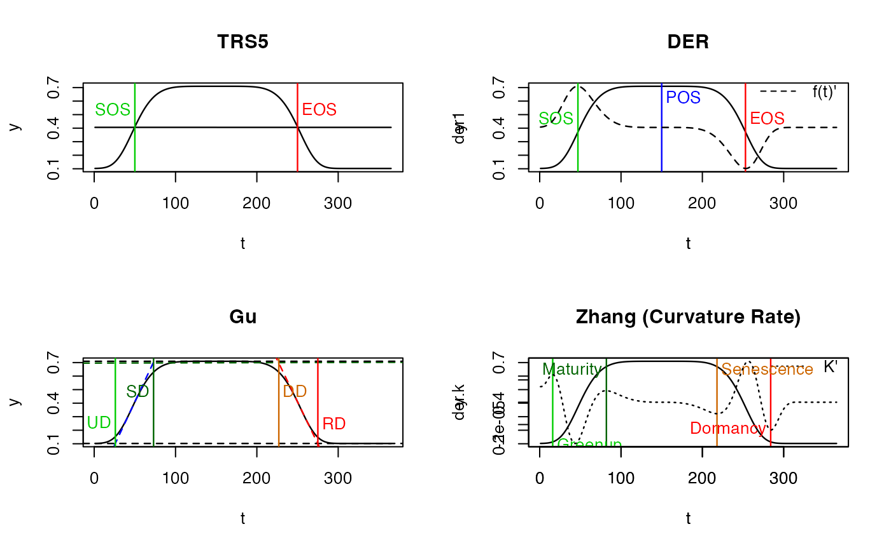

Phenology extraction in Inflection method (Zhang)
PhenoKl(
fFIT,
t = NULL,
analytical = FALSE,
smoothed.spline = FALSE,
IsPlot = TRUE,
show.legend = TRUE,
...
)object return by curvefit()
doy vector, corresponding doy of vegetation index.
If true, numDeriv package grad and hess
will be used; if false, D1 and D2 will be used.
Whether apply smooth.spline first?
whether to plot?
whether show figure lelend?
Other parameters will be ignored.
A numeric vector, with the elements of:
Greenup, Maturity, Senescence, Dormancy.
Zhang, X., Friedl, M. A., Schaaf, C. B., Strahler, A. H., Hodges, J. C. F. F., Gao, F., … Huete, A. (2003). Monitoring vegetation phenology using MODIS. Remote Sensing of Environment, 84(3), 471–475. doi:10.1016/S0034-4257(02)00135-9
# `doubleLog.Beck` simulate vegetation time-series
t <- seq(1, 365, 8)
tout <- seq(1, 365, 1)
par = c( mn = 0.1 , mx = 0.7 , sos = 50 , rsp = 0.1 , eos = 250, rau = 0.1)
y <- doubleLog.Beck(par, t)
methods <- c("AG", "Beck", "Elmore", "Gu", "Zhang") # "Klos" too slow
fit <- curvefit(y, t, tout, methods)
x <- fit$model$AG # one model
par(mfrow = c(2, 2))
PhenoTrs(x)
#> sos eos
#> 50 250
PhenoDeriv(x)
#> sos pos eos
#> 47 150 253
PhenoGu(x)
#> UD SD DD RD
#> 26 73 227 275
PhenoKl(x)

#> Greenup Maturity Senescence Dormancy
#> 16 82 218 284